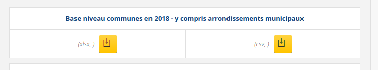

Variance
1 Intro : rappels divers
1.1 Théorie
- le khi2, la régression, et la variance
- démarche générale
1.2 Outils
- xls ou csv
- libre office ou R
2 Donnée et objet de l’exercice
https://www.insee.fr/fr/statistiques/5009218#consulter

Le but de l’exercice est de décrire l’organisation spatiale en Ile de France. La variance est très souvent utilisée en géographie pour tester des groupements spatiaux.
Question : observer la donnée .csv et comprendre comment elle fonctionne.
2.1 Hypothèse
Le niveau départemental permet de résumer l’hétérogénéïté de la richesse dans la région.
On prend donc le fichier communal et on va utiliser commme variable le revenu médian.
2.2 Filtrer la donnée
data <- read.csv2("data/FILO2018_DEC_COM.csv")
names(data)
data <- data [, c("CODGEO", "Q218")]
data <- data [substr(data$CODGEO, 1,2) %in% c("75","77","78","91","92","93","94","95"),]
write.csv(data, "data/inegalite.csv", fileEncoding = "UTF-8")2.2.1 Remarques sur R
opérateur d’assignation
les accolades
la complétion avec tabulation
2.2.2 Résultat
on a filtré la donnée de façon beaucoup plus rapide qu’avec un tableur et surtout on a gardé la trace des manipulations, le script.
3 Représentation graphique
La boite à moustaches permet de comparer rapidement des distributions.
On simplifie également le revenu médian
data <- read.csv("data/inegalite.csv")
data$DEP <- substr (data$CODGEO,1,2)
boxplot(data$Q218~data$DEP)
# avec un peu de présentation
# On divise par 10 000 le revenu
data$Q218s <- data$Q218 / 10000
boxplot(data$Q218s~data$DEP, xlab ="Département", ylab="Revenu médian en 2018 (dizaine de milliers)",
col=rainbow(8))
Petite précision, la mesure de centralité utilisée pour les revenus est la médiane car il s’agit toujours de distributions dissymétriques.
Attention, il ne s’agit pas du revenu médian des individus !
4 La variance
4.1 Rappel
Pour mémoire, la variance est le carré de la somme des écarts à la moyenne.
Dans le tableur, nous aurions fait une série de tableaux de calcul autour des écarts à la moyennes (en mettant des carrés).
tapply(data$Q218s, data$DEP,var)## 75 77 78 91 92 93 94 95
## 0.6977623 0.1161130 0.3560585 0.1974737 0.6528337 0.2563125 0.3415673 0.1863185# verif pour le cas du 77 par exemple
dataSel <- data [data$DEP == '77',]
mean((dataSel$Q218s - mean(dataSel$Q218s))^2)## [1] 0.11588124.2 Analyse de la variance
La variation est une quantité qui se décompose en :
les variations à l’intérieur de chaque groupe (variation intra groupe)
les variations entre les groupes (variation inter groupe)
4.2.1 La formule ANOVA dans R
Sous R, il suffit de lancer une formule.
data$DEP <- as.factor(data$DEP)
modele <- lm (Q218s ~ DEP, data = data)
anova(modele)## Analysis of Variance Table
##
## Response: Q218s
## Df Sum Sq Mean Sq F value Pr(>F)
## DEP 7 109.79 15.6837 70.195 < 2.2e-16 ***
## Residuals 1264 282.42 0.2234
## ---
## Signif. codes: 0 '***' 0.001 '**' 0.01 '*' 0.05 '.' 0.1 ' ' 1Sum Sq = la somme des carrés des écarts (SCE)
Mean Sq = la moyenne des carrés des écarts, c’est la variance.
La première ligne c’est pour la variation inter-groupe , la deuxième c’est pour l’intérieur des groupes (l’intra)
4.2.2 Significativité
F value = Test de Fisher, c’est le test de significativité pour la variance.
Le test est mesuré par le rapport entre la variance intergroupe et la variance intragroupe (avec les degrés de liberté).
Concernant les degré de liberté pour les données intra, on prend tous les effectis et on enlève le nombre de départements
1272-8## [1] 1264Comme pour le khi2, on compare à un test obtenu par le hasard (donc une table). La relation est significative (la p-value est très petite). Il y a un risque de se tromper presque nul. Il n’y a pas d’indépendance entre les départements et les revenus.
4.2.3 Intensité
On mesure l’intensité, la proportion de la variation expliquée par les modalités dans la variation totale (entre 0 et 1)
15/(15+0.2)## [1] 0.9868421L’intensité est très forte, plus de 98 % de la variation est expliquée par la structure départementale.
L5GEABIM Analyses bivariées et multivariées